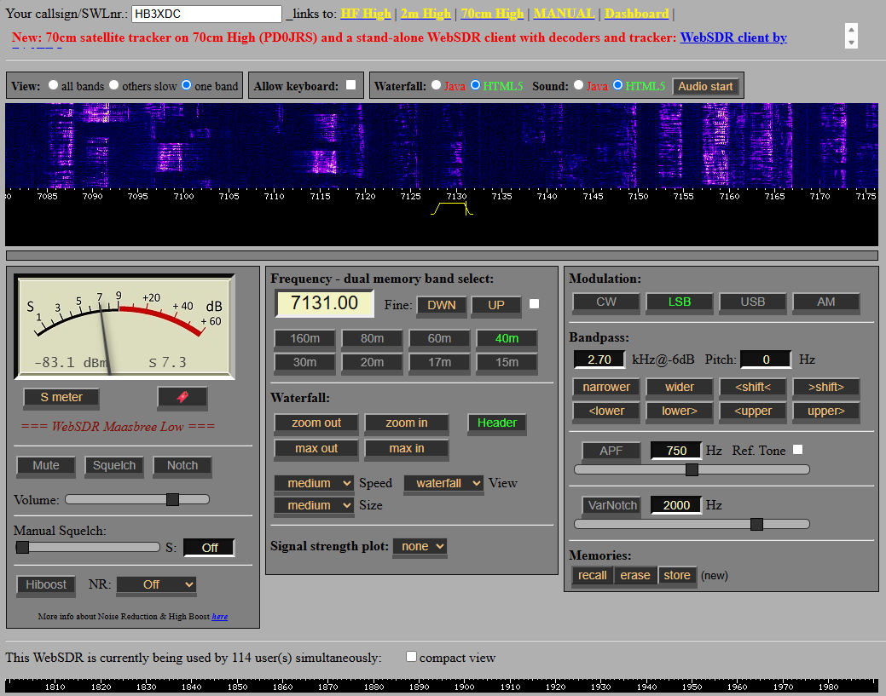

Maasbree: eine zweite Chance auf 80 Meter
HB3XDCs Empfangstipp für Mitteleuropa: klassischer WebSDR, ruhiger Standort und ein konkreter CATSync-Einstieg.

Screenshot: HB3XDC · Oberfläche: WebSDR Maasbree / PA3FWM. Gezeigt: 7,131 MHz, LSB, 40-m-Band. Momentaufnahme; kein Live-Status.
Warum dieser Empfänger?
Wenn das lokale QRM auf 80 m steigt, lohnt sich ein anderer Empfangsort. HB3XDC empfiehlt Maasbree besonders für diesen Versuch und für Verbindungen innerhalb Mitteleuropas. Das ist ein persönlicher Praxistipp; die tatsächliche Verständlichkeit hängt auch dort von Tageszeit, Störungen, Antenne und Ausbreitung ab.
Das Projekt liegt im Südosten der Niederlande und beschreibt selbst, dass ein ruhigerer Empfangsstandort den Ausgangspunkt bildete. Es verwendet die klassische WebSDR-Oberfläche von P. T. de Boer, PA3FWM. „Klassisch“ beschreibt hier die Softwareoberfläche: Die Projektseite dokumentiert auch einen Ausbau mit RX888 und ka9q als Empfangsbasis. Hardware, Signalverarbeitung und Weboberfläche sind getrennte Ebenen.
So startest du
- Die Projektseite öffnen und den gewünschten Empfänger wählen. Alternativ den direkten WebSDR-Link verwenden.
- Audio aktivieren, Frequenz eingeben und für eine übliche 80-m-SSB-Verbindung LSB wählen.
- Das Filter so einstellen, dass die Stimme verständlich bleibt und benachbarte Signale möglichst wenig stören.
- Mit Luzern oder dem eigenen Empfänger bei gleicher Frequenz vergleichen. Wegen Internetverzögerung beide Audiowege nicht gleichzeitig laut laufen lassen.
Mit dem eigenen VFO nachführen
Die Betreiber bieten eine eigene CATSync-Anleitung. Zusammen mit OmniRig kann so der Web-Empfänger der Frequenz deines Transceivers folgen. Für den IC-7300 MK2 erklärt der CAT-Praxisartikel die aktuellen USB- und CI-V-Besonderheiten.
Der entfernte Empfang verändert deinen Sendeweg nicht. Prüfe vor einem Anruf am eigenen Standort, ob die Frequenz frei ist, und denke bei Split an die tatsächliche Sendefrequenz. Ein Signal, das in Maasbree sehr gut ankommt, kann am eigenen Standort anders aussehen – genau diese Unterschiede machen den Vergleich lehrreich.
Eine kleine Hörübung
Wähle an zwei Abenden jeweils denselben Zeitraum. Notiere für drei Stationen, an welchem Empfangsort Sprache besser zu verstehen ist. Vermeide pauschale Siegerlisten: Je nach Herkunft des Signals kann einmal Maasbree, einmal Luzern oder Perfugas der günstigere Standort sein.